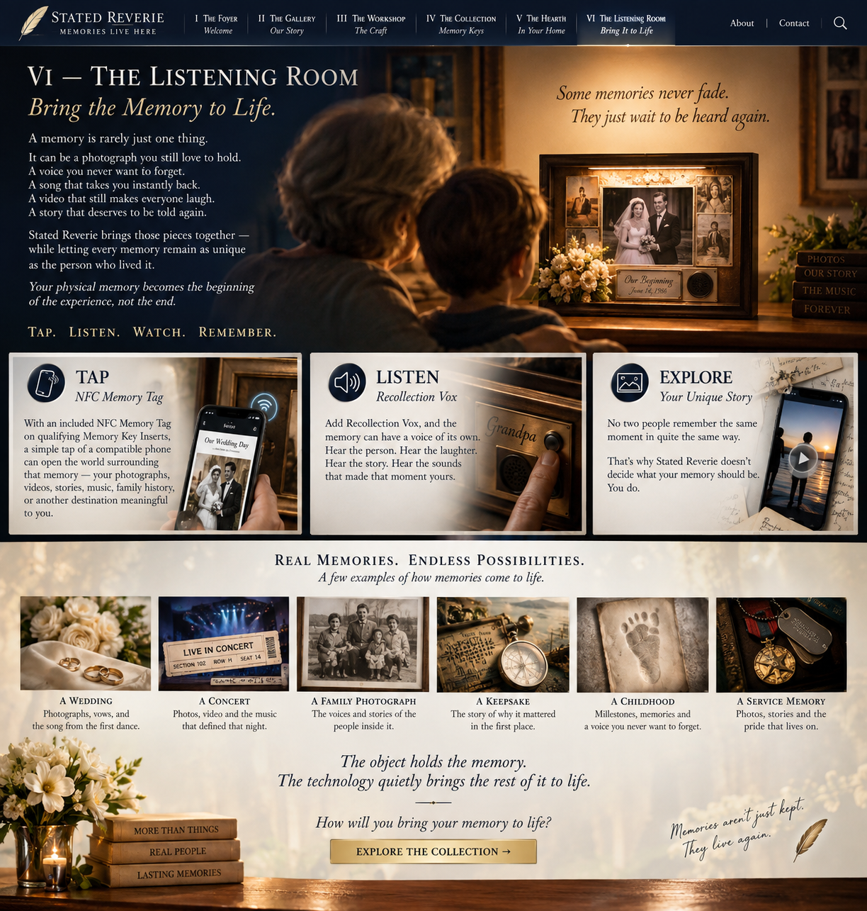

Qualifying non-clock and non-calendar Memory Key Inserts include an NFC Memory Tag. A simple tap with a compatible phone can open the digital destination connected to that memory—photographs, video, stories, music, family history, documents or another experience meaningful to you.

VI — THE LISTENING ROOM
Bring the Memory to Life.
A memory is rarely just one thing. It can be a photograph you still love to hold. A voice you never want to forget. A song that takes you instantly back. A video that still makes everyone laugh. A story that deserves to be told again.
Stated Reverie brings those pieces together—while letting every memory remain as unique as the person who lived it.
Your physical memory becomes the beginning of the experience, not the end.
TAP. LISTEN. WATCH. REMEMBER.
There is more to every memory.
The object may be what we kept, but the experience surrounding it is often what we truly remember. Stated Reverie gives you different ways to reconnect those pieces without allowing the technology to take over the presentation.
Add Recollection Vox and the memory can have a voice of its own. Hear the person. Hear the laughter. Hear the story. Hear the sounds that made that moment yours—without requiring the NFC experience to enjoy the physical recording.
No two people remember the same moment in quite the same way. NFC and Vox can be used independently or together, giving you the freedom to decide what belongs with your memory and how you want to experience it.
HEAR WHAT A MEMORY CAN SOUND LIKE
Press play. Remember the moment.
Recollection Vox can preserve more than a recording. It can return the sound of a moment—the music, the voices, the laughter and the atmosphere that made it yours.
Our Wedding
A few seconds of music can bring an entire day rushing back.
▶ HEAR SAMPLE1912 Wedding March · Public domain recording · Library of CongressThe Voices
The familiar sound of a birthday sung together becomes part of the memory.
▶ HEAR SAMPLEHappy Birthday, group-of-children style · CC0The Laughter
Sometimes the sound you would give anything to hear again is simply laughter.
▶ HEAR SAMPLEKids laughing · CC0Back in the Crowd
A ticket holds the date. The roar of the crowd can bring back the night.
▶ HEAR SAMPLEConcert crowd · CC0Imagine hearing your memory again.
A song. A voice. Laughter. The sound of a moment you thought had passed.
These are demonstration recordings only. Your Recollection Vox experience is created from the sounds that belong to your own memory.
REAL MEMORIES. ENDLESS POSSIBILITIES.
What could your memory become?
A WeddingPhotographs, vows, video and the song from the first dance.
A ConcertThe ticket you kept, the photographs you took and the music that defined that night.
A Family PhotographThe voices, stories and history of the people inside it.
A Treasured KeepsakeThe story of why an ordinary object became something you could never throw away.
A Childhood MemoryPictures, family video and a familiar voice telling the story again.
Your MemoryNot our definition of what matters—yours. As unique as the person who lived it.
“The object holds the memory.
The technology quietly brings the rest of it to life.”
How will you bring your memory to life?
EXPLORE THE COLLECTION →NFC Memory Tags are included with qualifying non-clock and non-calendar Memory Key Inserts. Product availability and compatible presentations are shown in The Collection.